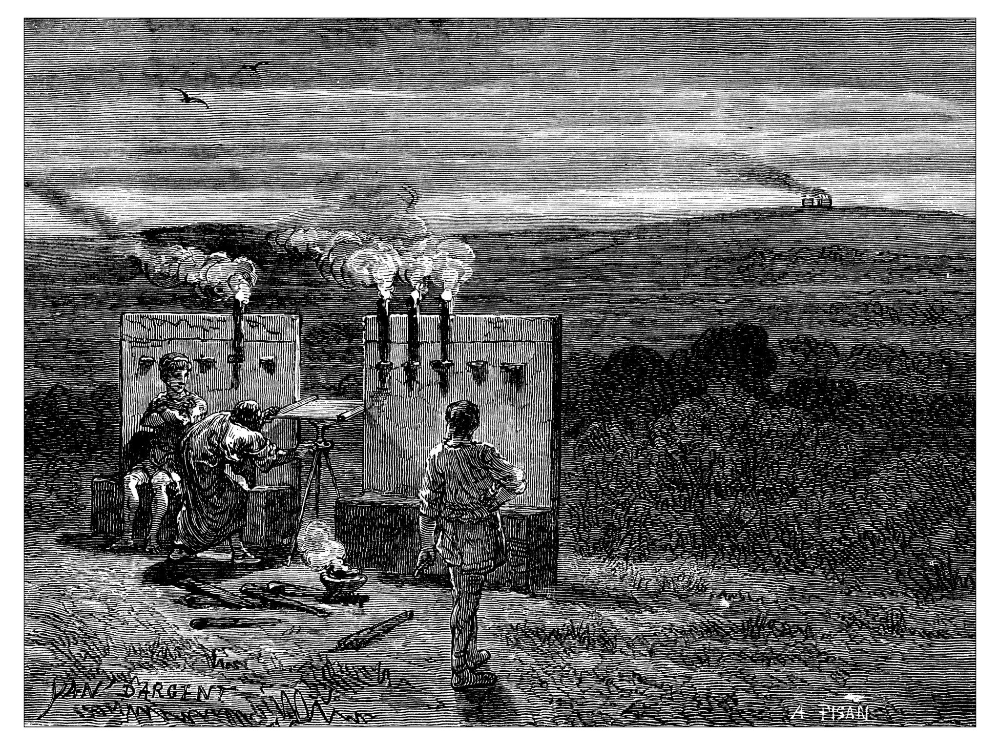
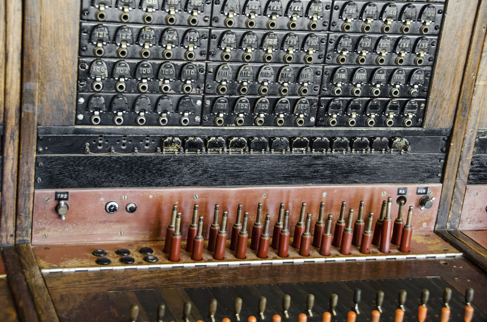
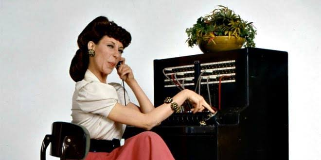
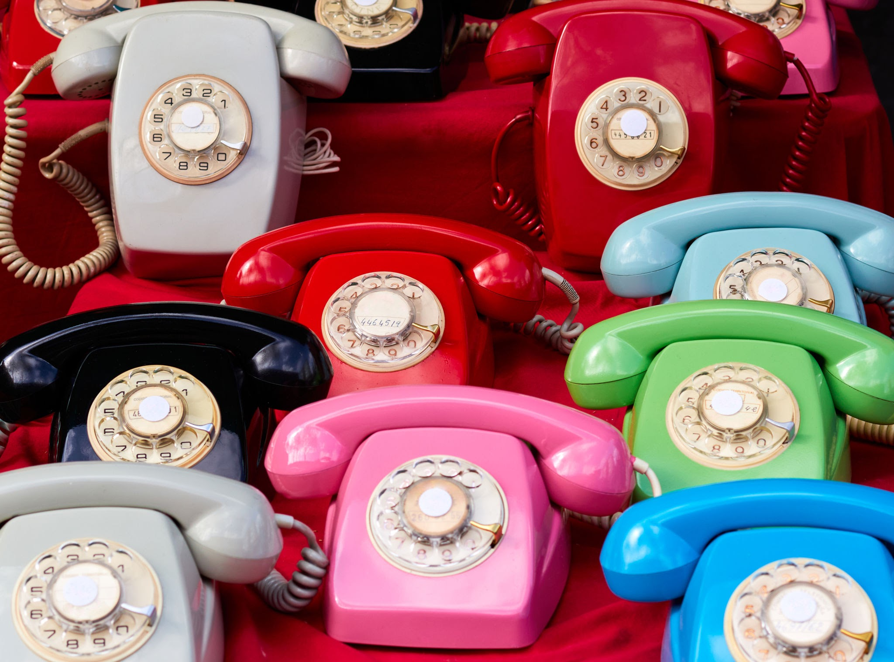
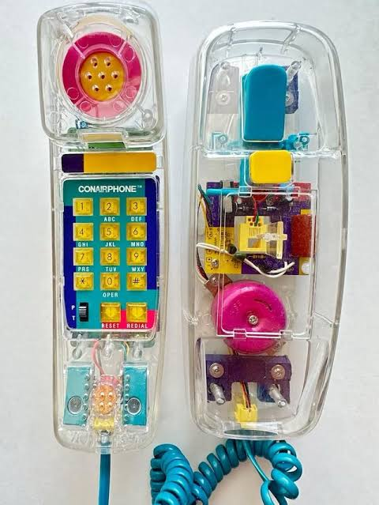
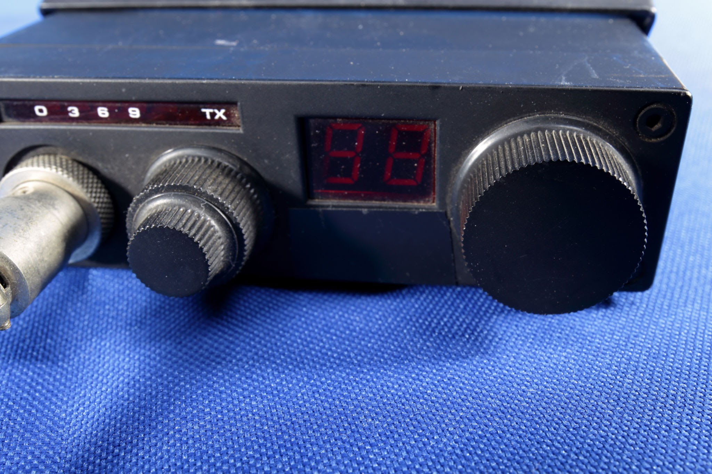
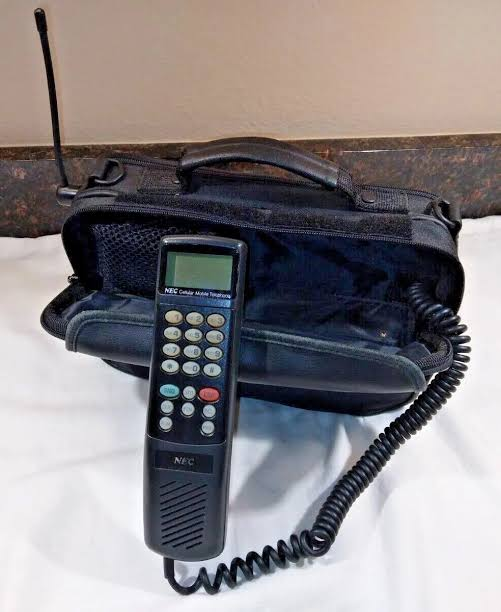
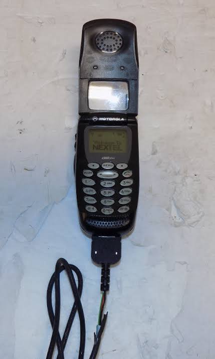
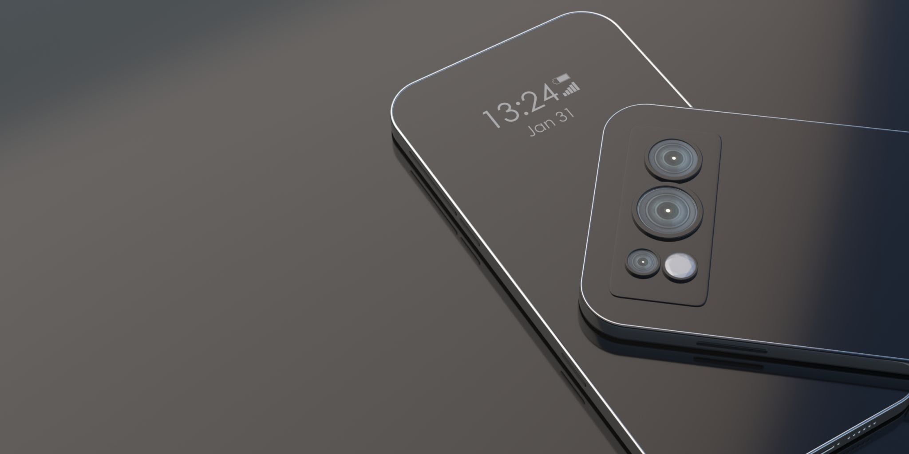

Before wires, we relied on visual cues. Ancient civilizations used smoke signals and beacon fires to transmit pre-arranged alerts across vast distances.

Early telephone calls required a human operator at a plug panel to manually connect you. This was immortalized in comedy by Lily Tomlin's character, Ernestine.


The rotary phone brought automation to the home. You physically rotated the dial for each number, sending electrical pulses to the exchange.

Push-button phones replaced mechanical clicks with musical tones (DTMF), making dialing instant and paving the way for digital menu services.

CB radios allowed everyday people, especially truckers, to chat on open radio channels without any central network. It was the original social media.

The bag phone was the ultimate mobile powerhouse, packing a massive 3-watt transmitter into a carryable bag, perfect for cars and rural travel.

As technology shrank, we moved to flip phones. These brought convenience and portability, bridging the gap between basic calls and modern features.

Today, the smartphone acts as a pocket computer, merging everything we learned from telegraphs, pagers, and radios into one glass-screened portal to the world.